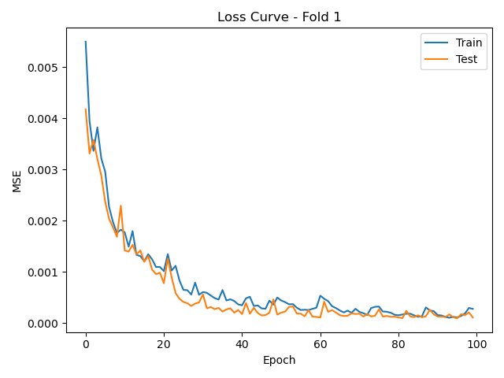

Loss Curve

This research focuses on developing Neural Operator–based surrogate models to simulate and generalize tau-protein progression in the human brain — a key process for understanding neurodegenerative diseases. These models learn the underlying spatiotemporal dynamics governed by partial differential equations (PDEs), serving as efficient data-driven surrogates for complex biophysical simulators. The framework employs Fourier Neural Operators (FNO) for global spectral learning, Wavelet Neural Operators (WNO) for localized multi-scale resolution, Graph Kernel Networks (GKN/MGKN) for topology-aware learning on the brain connectome, and DeepONets for functional mappings between biological parameters and temporal trajectories.
| Descriptor | Symbol | Shape | Notes |
|---|---|---|---|
| Input (X) | X = [γ₁, λ₁, δ, ε, τ₀] | [N, 34] | 4 parameters + 30-node initial tau. |
| Output (Y) | Y = τ(t) | [N, 30, T] | Tau trajectories over time horizon. |
The results section presents the performance of various Neural Operator models in capturing the spatiotemporal evolution of tau-protein progression across brain regions. Each model’s predictions are evaluated against ground-truth trajectories using normalized mean squared error and correlation metrics. Visualization panels display representative test samples, including loss curves showing convergence behavior and time–trajectory plots illustrating how predicted tau concentrations evolve across nodes over time. The plots highlight the stability and generalization of operator learning under varying parameters and random seeds.
Optional node selection (0–9).